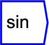

Next: cos
Up: Functions/Unary Operators
Previous: ln
Contents

Produces a sine function of the input.
For example, connecting a ``time'' block to this function, and then
to a graph, will produce a sine wave.
The operator can be placed on the canvas in two ways:
- From the Functions (``function'') toolbar; or
- By typing the letters ``sin'' on the canvas and then pressing the
Enter key.
For further explanation regarding trigonemtric functions, see
Wikipedia's page on trigonometric functions.